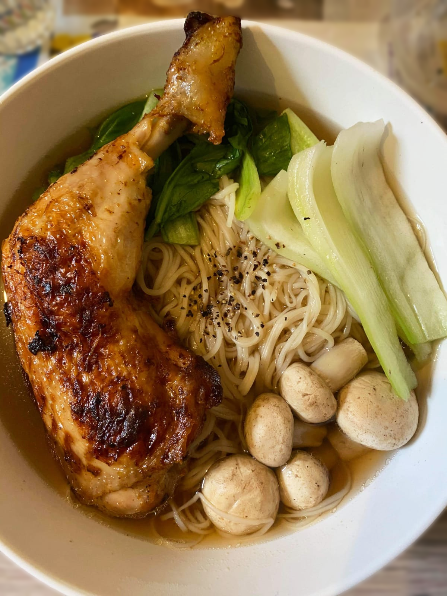

What is Chicken noodle soup?
Chicken Noodles Soup is a combination of crispy golden chicken, golden chewy noodles, and hot water. In addition to the chicken thighs (or wings, chicken breasts) that are fried crispy and fragrant, the highlight of a bowl of chicken noodles is the broth. The broth has a sweet taste with herbs, shiitake mushrooms, and bok choy to bring you a delicious and very "satisfied"
How to cook Chicken Noodle Soup
Ingredients
• duck legs (about 2.25 lbs or 1kg)
• 2 thumb-sized pieces of ginger, crushed
• 6 tablespoon dark soy sauce
• 2 tablespoons crushed and roughly chopped garlic
• 2 tablespoons sesame oil
• 1 tablespoon sugar
• 1/2 tablespoon oyster sauce
• 6-7 cups water (see Notes)
• 300g shiitake mushrooms
• 1/2 tablespoon pepper
Processing Chicken Noodle Soup
Fried the chicken legs until the skin is blistered, deep brown with some darkened spots. Once the duck skin is blistered and golden/darkened, we will simmer the chicken legs with all other ingredients to make the broth. The duck legs should be simmered until very tender and easy to pick out from the bone. It takes me about 80-90 minutes to cook the broth.
To Serve
• yellow wheat-based noodles ( egg noodles or ramen-style noodles)
• blanched green vegetables (such as baby bok choy)
• Mushrooms
• Pepper